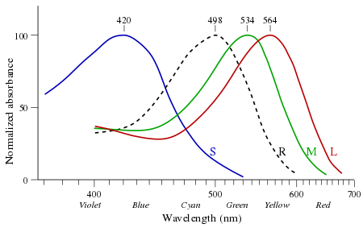

¿Qué es el color?

El color es la impresión producida por un tono de luz en los órganos visuales, o más exactamente, es una percepción visual que se genera en el cerebro de los humanos y otros animales al interpretar las señales nerviosas que le envían los fotorreceptores en la retina del ojo, que a su vez interpretan y distinguen las distintas longitudes de onda que captan de la parte visible del espectro electromagnético. Es estudiado por la ciencia del color.